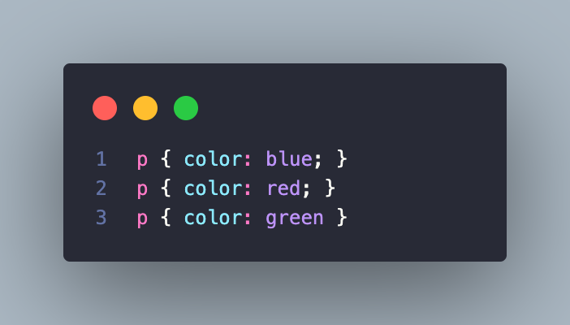
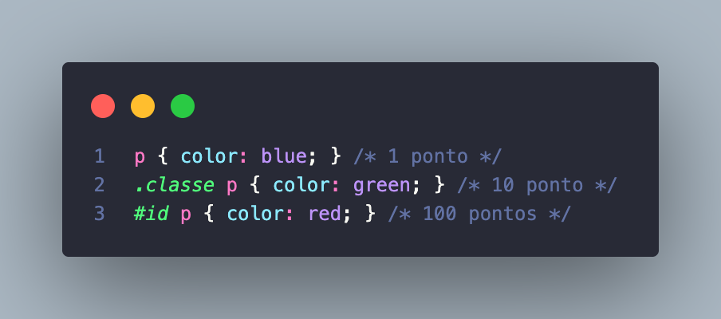
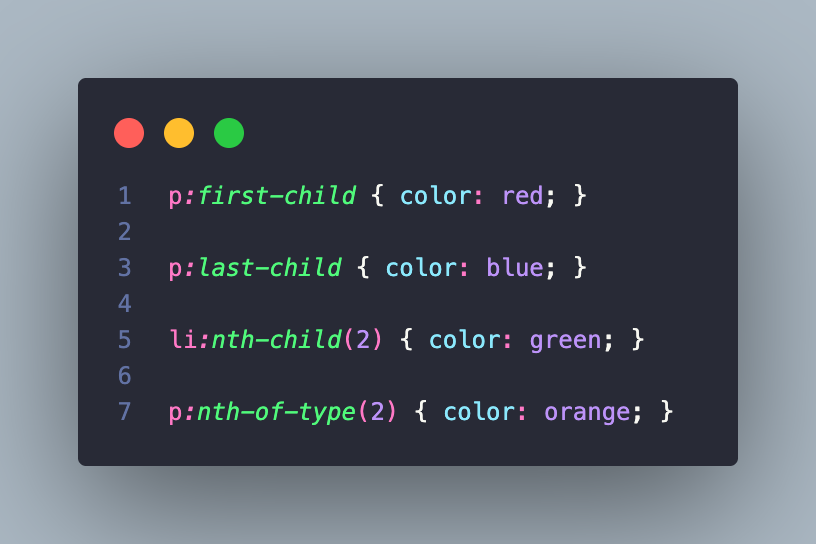

Regra da Cascata
Define a ordem de prioridade quando há conflito em um mesmo elemento
O parágrafo ficára verde, pela ordem de aparição
Especificidade > aparição
Especificidade
ID - #id (100 pontos)
Classe/Pseudo-classe - .classe/:hover, :first-child (10 pontos)
Elemento - p, h1, div (1 ponto)

O maior número total vence.
Combinação de Seletores
Espaço - .classe h1 - Seleciona qualquer h1 dentro de .classe
Filho - .classe > h1 - Seleciona apenas o h1 que é filho direto de .classe
Soma - .classe h1+h1 - Seleciona o h1 que vem imediatamente após outro h1 dentro de .classe
Pseudo-Classes
:first-child - Seleciona o primeiro filho de um elemento
:last-child - Seleciona o último filho de um elemento
:nth-child(n) - Seleciona o enésimo filho (número)
nth-of-type(n) - Seleciona a tag (número)

Display Inline e Block
InlineOcupa apenas o espaço do conteúdo
- Não quebra linha automaticamente
- Não aceita width nem height
- Aceita apenas padding horizontal e margin horizontal
- Ex.: span, a, strong.
- Ocupa toda a largura disponível
- Sempre quebra a linha
- Aceita width, height, margin, padding em todas as direções
- Ex.: div, p, h1
Elementos padrão Inline e Block
Block: div, p, h1, ul, ol, section, article.
Iniline: span, a, strong, em, img, label